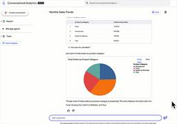
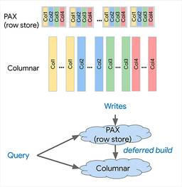
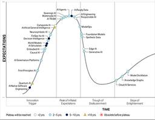
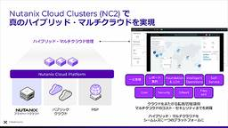
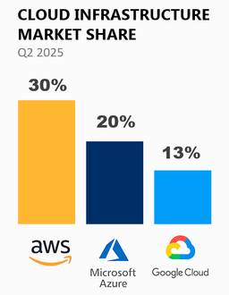

Publickey
https://www.publickey1.jp/
Enterprise ITに軸足を置き、新たにIT業界を変えつつあるクラウドコンピューティングやHTML5など最新の話題を、ブロガー独自の分析を交え、充実した記事で紹介するブログです。毎日更新しています。
フィード
無料で読めるITまんが 2025年版
Publickey
ネット上にはたくさんのIT系のコンテンツがあふれています。そのほとんどは文章として書かれていますが、一部にはマンガの形で面白く分かりやすくしたものもあります。 ここでは、マンガ化されたITコンテンツを集めてみました。毎年夏休みの恒例企画、I...
2日前
オラクル、Exadataをサーバレスかつ分散データベースにした「Oracle Globally Distributed Exadata Database on Exascale Infrastructure」提供開始
Publickey
オラクルは同社のフラッグシップデータベースとなるExadataを、サーバレス形式かつグローバルな分散データベースで提供する「Oracle Globally Distributed Exadata Database on Exascale I...
2日前

Google Cloud、自然言語からデータ分析用のPythonコードを生成し実行する「Code Interpreter」をプレビュー公開
Publickey
Google Cloudは、ビジネスユーザーからの自然言語による質問を基にデータ分析用のPythonコードを生成し実行する新機能「Code Interpreter」をプレビュー公開しました。 SQLよりも複雑なデータ分析やグラフを用いての可...
3日前

Google Cloud、「Cloud Spanner」がカラムナエンジン搭載。OLTP＋OLAPを大規模分散データベースで実現
Publickey
Google Cloudは同社が提供するマネージドデータベースのCloud Spannerに、OLAP向けのデータベースエンジン「Spanner columnar engine」を追加したことを発表しました。 大規模分散DBでOLTPとOL...
3日前

ガートナー、AIにおけるハイプサイクル2025を発表。AIエージェントやマルチモーダルAIは過剰期待、AIネイティブソフトウェアエンジニアリングやAGIは黎明期など
Publickey
米調査会社のガートナーは、「Hype Cycle for Artificial Intelligence」（AIにおけるハイプサイクル）の2025年版を発表しました。 ハイプサイクルとは、新しいテクノロジが登場して定着するまでの過程を黎明期...
4日前
AWS、自動でスケールするJSONドキュメントデータベース「Amazon DocumentDB Serverless」正式リリース
Publickey
Amazon Web Services（AWS）は、自動でスケールするJSONドキュメントデータベース「Amazon DocumentDB Serverless」の正式リリースを発表しました。 Amazon DocumentDBはMongo...
4日前

IT系上場企業の平均年収を業種別にみてみた 2025年版［後編］ ～ パッケージソフトウェア系、SI／システム開発系、クラウド／通信キャリア系企業
Publickey
IT系企業で平均年収が高いのは、勢いのあるネットベンチャー系企業なのか、それとも伝統的なSIerなのでしょうか。毎年恒例の記事を今年も公開します。 上場企業は毎年「有価証券報告書」の発行を義務づけられており、そこには従業員の人数や平均年齢...
5日前
IT系上場企業の平均年収を業種別にみてみた 2025年版［前編］ ～ ネットベンチャー、ゲーム、メディア系
Publickey
IT系企業で平均年収が高いのは、勢いのあるネットベンチャー系企業なのか、それとも伝統的なSIerなのでしょうか。毎年恒例の記事を今年も公開します。 上場企業は毎年「有価証券報告書」の発行を義務づけられており、そこには従業員の人数や平均年齢...
5日前

オンプレミスのクラウドへの拡張と移行を簡単低コストで実現するプラットフォームソリューション「Nutanix Cloud Clusters」（NC2）とは？［PR］
Publickey
オンプレミスのシステムを発展させる手段として、クラウドとの連携や移行を検討している企業は多いことでしょう。 例えば、災害や障害を想定したオンプレミスのディザスタリカバリ用システムとしてのクラウド利用は非常に有効です。 あるいは、月末処理やソ...
6日前

クラウドインフラのシェア、AWSが30％に巻き返す。Azureは2ポイント下がって20％に後退、2025年第2四半期、Synergy Researchの調査結果
Publickey
調査会社のSynergy Research Groupは、グローバルにおける2025年第2四半期のクラウドインフラの市場状況について調査結果を発表しました。 クラウドインフラとは、IaaS、PaaS、ホステッドプライベートクラウドを合わせた...
6日前
WebデザインツールのFigma、ニューヨーク証券取引所への新規上場を果たす。時価総額8兆円超
Publickey
Webデザインツールを提供するFigmaは7月31日（現地時間）、ニューヨーク証券取引所への新規上場を果たしました。 公開価格は33ドルでしたが取引時間中に大きく値を上げ、初日の終値は3倍以上となる115.5ドル、8月1日にはさらに値上がり...
6日前

国内ITサービス市場、昨年（2024年）の売上1位は富士通、2位は日立製作所、3位はNEC。IDC Japan
Publickey
調査会社のIDC Japanは2024年の国内ITサービス市場ベンダー売上ランキングを発表しました。 売上の上位6社は1位から順に、富士通、日立製作所、NEC、NTTデータ、IBM、アクセンチュア。 昨年4位であった日立製作所が前年比売上額...
9日前
オラクルが4.5兆円の超大型クラウド案件を獲得／モンハンワイルズにおけるTiDB導入背景／AIに仕様書を読ませるとテストケースを自動作成ほか。2025年7月の人気記事
Publickey
名刺やハガキなどをスキャンして電子化するScanSnapを8年ほど使っていたのですが、ついに壊れてしまいました。しかしもう滅多に名刺交換もしませんし年賀状を始めとしたハガキのやり取りもかなり少なくなっています。 ですのでこの令和にいまさら新...
9日前
GitHubがあらゆるレベルの開発者に向けた夏のハッカソンを開催中。「楽しく、ばかばかしく、創造的なプロジェクト」を審査、9月22日締め切り
Publickey
GitHubは、「For the Love of Code」と名付けた夏のハッカソンを開催中です。 That idea you've been sitting on? The domain you bought at 2AM? A ...
11日前
すべてオンプレミスで稼働するAIコードアシスタント「Dell AI Code Assistant」、デル・テクノロジーズが国内で提供開始
Publickey
デル・テクノロジーズ（以下、デル）は、同社のサーバやストレージ、ネットワーク機器とNvidiaのGPUを用いたシステム基盤の上で、生成AIとAIコードアシスタントソフトウェアを実行することで、すべてがオンプレミス上で稼働する「Dell AI...
12日前